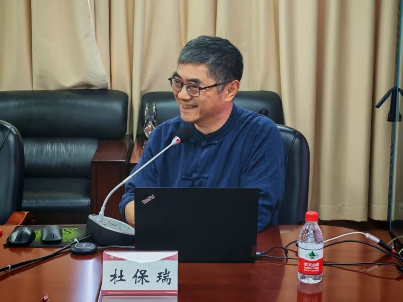
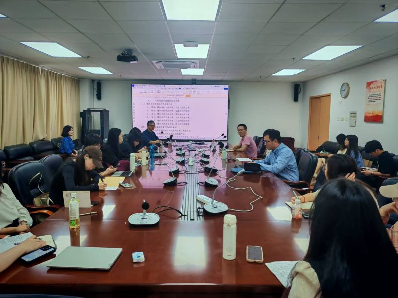

<td align="center" class="tbcolor10" colspan="2" valign="top">
<table border="0" cellpadding="0" height="100%" width="100%">
<tbody><tr><td align="right" height="35px" style="font-size:9pt">
<a href="javascript:window.close()" title="关闭本窗口">关闭窗口</a>｜<a href="print.asp?id=545647" target="_blank" title="打印本页内容">打印张贴版</a>    

</td></tr>
<tr>
<td align="center" height="500" valign="top">
<table border="0" cellpadding="4" cellspacing="0" height="100%" style="border-collapse: collapse;word-break:break-all;" width="86%">
<tbody><tr>
<td align="center" height="80px"><span style="font-family:方正小标宋简体;font-size: 25px;color: #C70E5C"><b>“如何深入学习中华优秀传统文化——从中国哲学经典出发的创造转化”学术讲座在马克思主义学院顺利举办</b></span></td>
</tr>
<tr>
<td align="center" height="50px" style="font-size: 9pt"><font color="#808080">马克思主义学院　2025/4/18 15:15:00</font><br/> 
<font color="#F8F8F8" style="font-size:9pt">（钟沛基 2022280095）</font></td>
</tr>
<tr>
<td height="300" valign="top">
<p class="MsoNormal" style="text-indent:30.0pt;mso-char-indent-count:2.0;
line-height:28.0pt;mso-line-height-rule:exactly">2025年4月14日上午，由改革开放研究院、马克思主义学院联合主办的名家讲座在深圳大学汇文楼1600会议室顺利举行。上海交通大学特聘教授杜保瑞教授为深大师生带来了一场题为“如何深入学习中华优秀传统文化——从中国哲学经典出发的创造转化”的精彩讲座。本次讲座由深圳大学马克思主义学院副院长张守奎教授主持，众多师生到场聆听。</p><p class="MsoNormal" style="text-align: center; text-indent: 30pt; line-height: 28pt;"></p>
<p class="MsoNormal" style="text-indent:30.0pt;mso-char-indent-count:2.0;
line-height:28.0pt;mso-line-height-rule:exactly">在讲座中，杜保瑞教授首先开宗明义地指出，中国哲学经典是中国传统文化的核心价值，它讲述的是关于人生的终极理想，体现在中国传统文化的文学、历史、管理、艺术、器物等等各个方面。</p><p class="MsoNormal" style="text-align: center; text-indent: 30pt; line-height: 28pt;"></p><p class="MsoNormal" style="text-indent:30.0pt;mso-char-indent-count:2.0;
line-height:28.0pt;mso-line-height-rule:exactly">紧接着，杜教授从全局性视角深入浅出地讲解了中国哲学核心意涵的指向，并强调只有同时联系生活实际，才能领会中国哲学的精神智慧和博大精深。</p>
<p class="MsoNormal" style="text-indent:30.0pt;mso-char-indent-count:2.0;
line-height:28.0pt;mso-line-height-rule:exactly">杜教授指出，中国哲学传统对比西方哲学传统是实践哲学与思辨哲学的区别、爱人与爱智的区别、关怀与惊奇的区别。中国哲学经典的目的在于价值意识的提出、人生目标的指明、生命意义的追求、生活情境的认识、角色扮演的原则和活出精彩的人生。杜教授将学习中国哲学经典智慧的原则总结为四点：第一，从理论的建构和经验性的哲学进路进行研究；第二，有自己的生命经验才能理解；第三，相信是真理才能学得好；第四，切实笃行是学习的态度。</p>
<p class="MsoNormal" style="text-indent:30.0pt;mso-char-indent-count:2.0;
line-height:28.0pt;mso-line-height-rule:exactly">杜教授进一步分析了中国哲学不同派别的价值信念与实践方法及其对应的经典角色扮演。杜教授从《论语》《孟子》《大学》《中庸》四部儒学经典著作所涉及的理念分析了儒家学派价值信念和实践方法，包括《论语》中的智仁勇、《孟子》中的四端、《大学》中的明德新民止于至善和《中庸》中的博学审问慎思笃行等等。至于道家学派，杜教授则是从老子的“生而不有，为而不恃，长而不宰”、庄子的逍遥自适、列子的“养生”以及原始佛教和大乘佛学所涉及的理念进行解读。而后，杜教授别具一格地从周易六爻分析了墨家、儒家、庄子、老子、法家和佛教对应扮演的经典社会角色。</p>
<p class="MsoNormal" style="text-indent:30.0pt;mso-char-indent-count:2.0;
line-height:28.0pt;mso-line-height-rule:exactly">在讲述的最后，杜教授指出了中国哲学经典在现实生活中的运用方向，即其在当代的现代创造转化：一是应用于心理咨询作为价值引领；二是应用于教育体系作为目标指导；三是应用于管理领域作为情境分析；四是应用于文学、艺术、创业等作为创意来源。而这些运用都需要具备对中国哲学经典深厚的了解和积淀。</p><p class="MsoNormal" style="text-align: center; text-indent: 30pt; line-height: 28pt;"></p>
<p align="center" class="MsoNormal" style="text-align:center;text-indent:24.0pt;
mso-char-indent-count:2.0">
</p>
<p align="left" class="MsoNormal" style="text-align:left;text-indent:30.0pt;
mso-char-indent-count:2.0;line-height:28.0pt;mso-line-height-rule:exactly">在讲座的互动环节中，师生围绕“中华文化主体性”等问题与杜教授进行互动交流。陈晨老师表示，杜教授的讲述让她深受触动，她从中感悟到了怎么做老师、怎么做学问和怎么做一个活生生的中国人。张守奎副院长对杜保瑞教授的精彩讲述表示感谢并作了总结发言，指出杜教授对中国传统文化的深入理解和独到领会能够为师生带来诸多思考和启发。讲座在师生热烈的掌声中圆满结束。</p></td>
</tr>
<tr><td height="0" style="font-size: 9pt"></td></tr>
<tr><td align="right" style="font-size: 9pt">撰稿：马克思主义学院　审核：马克思主义学院  <br/>（更新于2025/4/19 14:56:00）<br/> </td></tr>
</tbody></table>
</td>
</tr>
</tbody></table>
</td>
